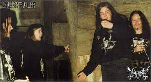
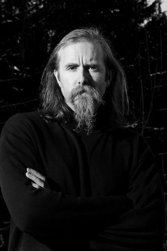

Noruega se ha destacado por la potencia de sus bandas, pero sobre todo por liderar con Suecia el black metal, subgénero que nació en los años 80, pero que tuvo sus orígenes en los 70's con los ingleses Venom. Precisamente esta banda fungió como base para que un joven Varg Vikernes, llamado originalmente Kristian Vikernes, nacido en Bergen, Noruega, en 1973, se interesara en este tipo de música que posteriormente lo llevaría a quemar iglesias y a matar a su amigo, situación que lo mantuvo en prisión más de 15 años. Luego de practicar y buscar bandas similares, pero sobre todo de cambiarse el nombre, al considerar Kristiano como algo referente al cristianismo, una de las cosas en las que está completamente en contra lo que predica en términos paganos, optó por llamarse Varg y buscar un sonido que lo llevara por el camino musical que deseaba, mientras una banda llamada Mayhem comenzaba a liderar el black metal con su EP 'Deathcrush' y que pronto se cruzaría en su camino.
En ese andar, Vikernes emprendió algunos proyectos con bandas que no lo llevaron a consolidarse como bajista, por lo que conoció a Oystein Aarseth, guitarrista mejor conocido como 'Euronymous', quien antes de formar Mayhem tuvo una tienda de discos que también fungió como disquera, por lo que se encargó del material debut de Varg, ahora con su nombre Burzum. Antes de esto, Varg Vikernes convivió bastante con 'Euronymous', en la época en donde comenzó y avanzó el llamado Inner Circle, el cual nació para erradicar el cristianismo en Noruega. Entonces ambos músicos iniciaron una ola de violencia contra los templos, motivo que fue siendo entendido por los fans de este subgénero. El objetivo era dar su música, pero haciendo conciencia en las personas en el giro del mencionado propósito. Burzum avanzaba al mismo tiempo que Mayhem, pero esta última banda pasó de tener vocalistas en 'Messiah' y 'Maniac', antes de la llegada del mítico 'Dead', con quien Varg convivió en su momento. El disco en vivo de Mayhem 'Dawn Of The Black Hearts', fue el trabajo que consagró a 'Dead', pero con su trágica muerte llevó al grupo a replantearse su continuidad, así como la de 'Euronymous', quien optó en un principio por seguir con su disquera, apoyando a Burzum.
Sin embargo, el trágico final para Aarseth llegó en 1993, cuando Vikernes buscó seguir su carrera con otra disquera, pero este conflicto se finiquitó con el asesinato del guitarrista a manos del bajista. Esto pasó en la casa de 'Euronymous' y a pesar de que Varg intentó escapar y ocultarse, finalmente dieron con su paradero y fue encarcelado. Tras esto, el camino de Mayhem comenzó oficialmente con su primer disco 'De Mysteriis Dom Sathanas', lanzado en 1994. Verg Vikernes pasó 16 años en prisión y salió en el 2009 para continuar su carrera con Burzum, siendo considerado, inexplicablemente para muchos, un ícono y modelo a seguir..